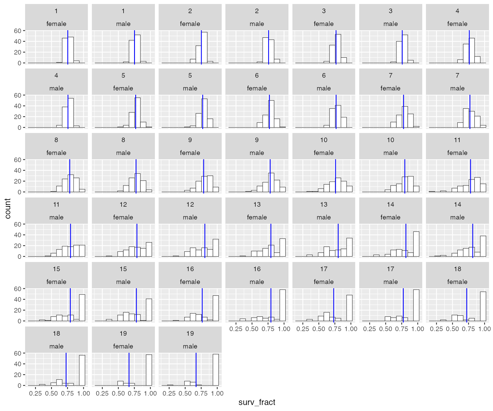
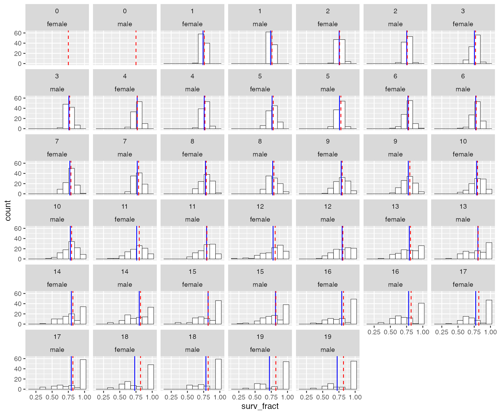
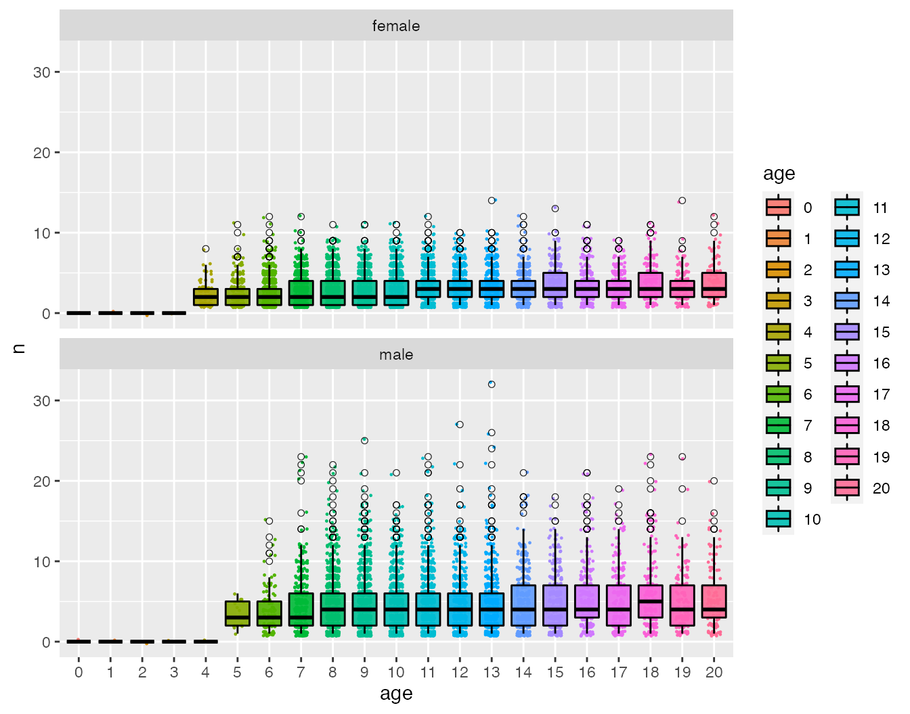
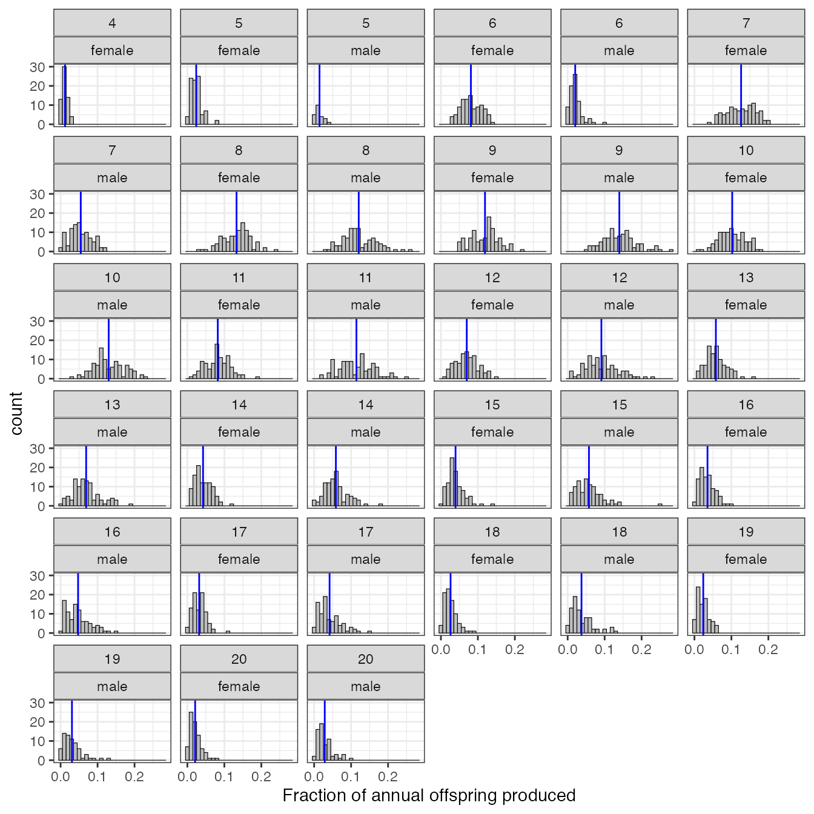
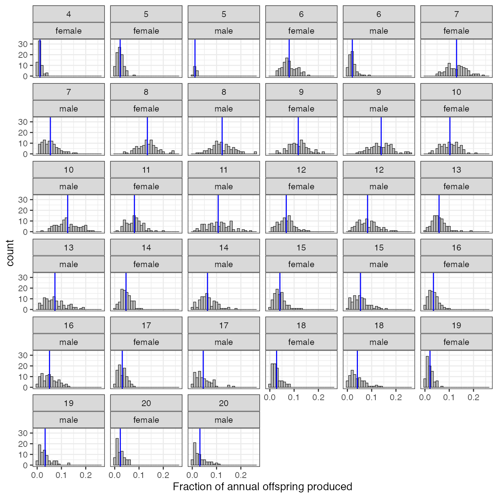
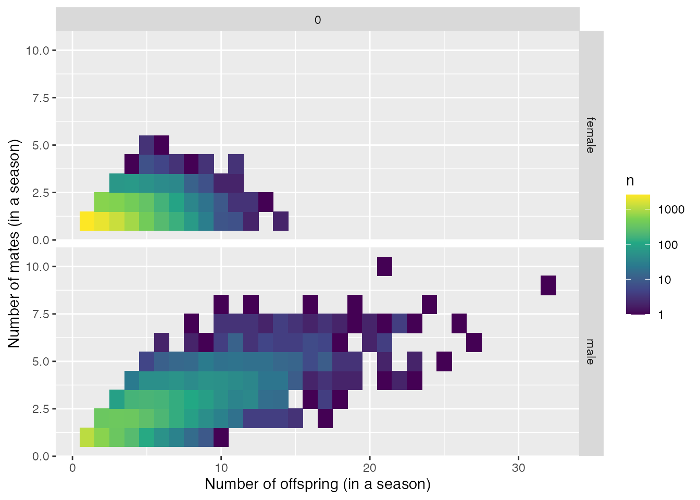
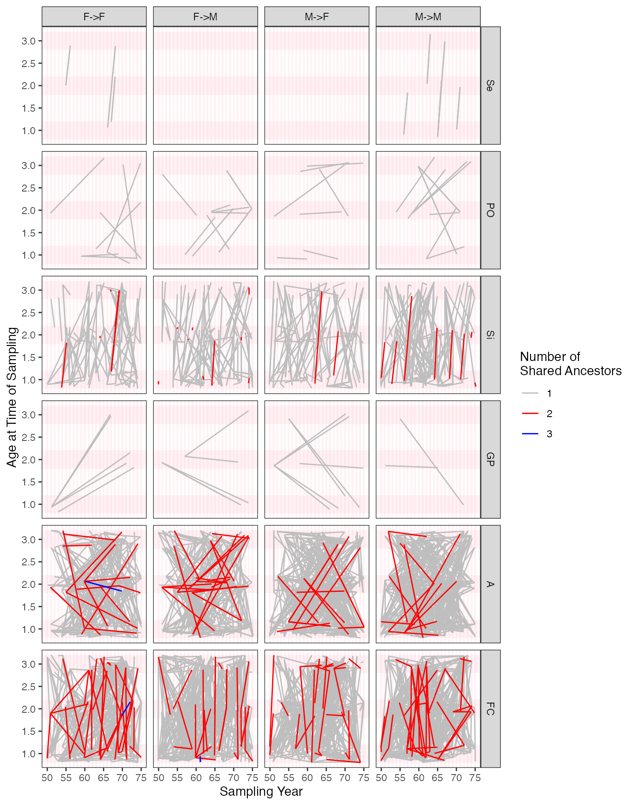
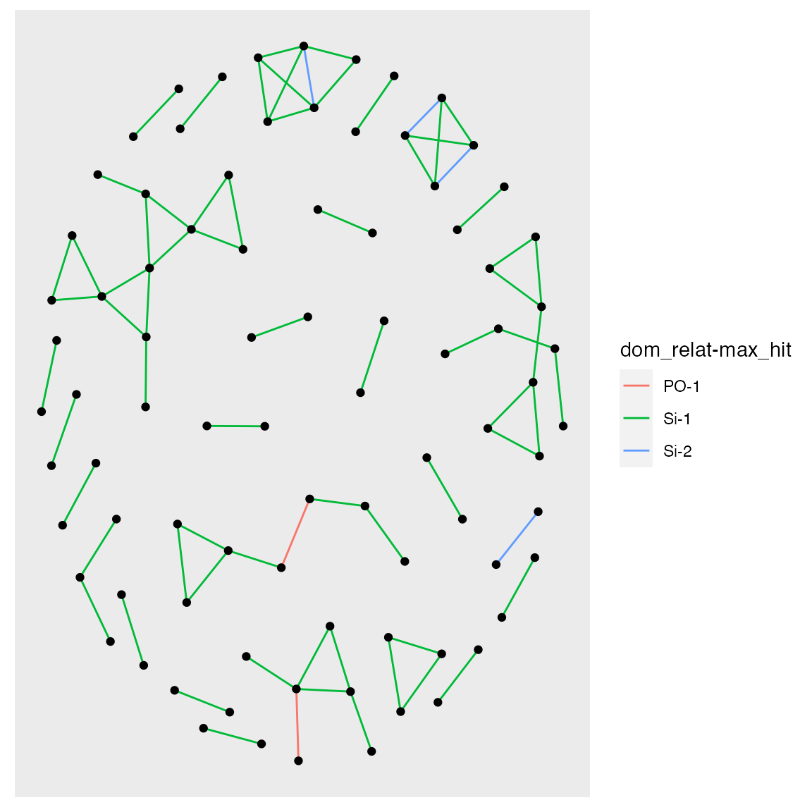
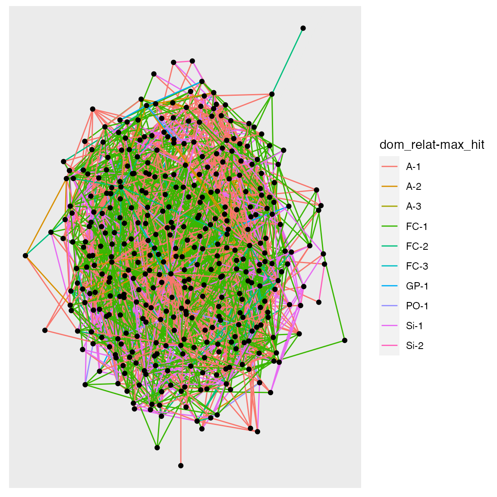

Simulation from species 1 life history
species_1_simulation.RmdFor this first example, we use the hypothetical life history of species 1. First we have to set spip up to run with that life history.
Setting the spip parameters
spip has a large number of demographic parameters. Typically spip is run as a command-line program in Unix. In CKMRpop, all that action goes on under the hood, but you still have to use the spip parameters. This vignette is not about using spip. For a short listing of all the spip options, do this:
If you want a full, complete, long listing of all the spip options, then you can do:
library(CKMRpop)
spip_help_full()All of the “long-form” options to spip are given on the Unix command line starting with two dashes, like --fem-surv-probs. To set parameters within CKMRpop to send to spip, you simply make a named list of input values. The names of the items in the list are the long-format option names without the leading two dashes. For an example, see the package data object species_1_life_history, as described below.
Basic life history parameters
These parameters are included in the package in the variable species_1_life_history. It is named list of parameters to send to spip. The list names are the names of the spip options. It looks like this:
species_1_life_history
#> $`max-age`
#> [1] 20
#>
#> $`fem-surv-probs`
#> [1] 0.75 0.76 0.76 0.77 0.77 0.78 0.78 0.79 0.79 0.80 0.80 0.80 0.81 0.81 0.82
#> [16] 0.82 0.82 0.82 0.82 0.82
#>
#> $`male-surv-probs`
#> [1] 0.75 0.76 0.76 0.77 0.77 0.78 0.78 0.79 0.79 0.80 0.80 0.80 0.81 0.81 0.82
#> [16] 0.82 0.82 0.82 0.82 0.82
#>
#> $`fem-prob-repro`
#> [1] 0.00 0.00 0.00 0.02 0.09 0.36 0.75 0.94 0.99 1.00 1.00 1.00 1.00 1.00 1.00
#> [16] 1.00 1.00 1.00 1.00 1.00
#>
#> $`male-prob-repro`
#> [1] 0.00 0.00 0.00 0.00 0.01 0.05 0.22 0.64 0.91 0.98 1.00 1.00 1.00 1.00 1.00
#> [16] 1.00 1.00 1.00 1.00 1.00
#>
#> $`fem-asrf`
#> [1] 0.00 0.00 0.00 3.56 3.72 3.88 4.04 4.20 4.36 4.52 4.68 4.84 5.00 5.16 5.32
#> [16] 5.48 5.64 5.80 5.96 6.12
#>
#> $`male-asrp`
#> [1] 0.00 0.00 0.00 3.56 3.72 3.88 4.04 4.20 4.36 4.52 4.68 4.84 5.00 5.16 5.32
#> [16] 5.48 5.64 5.80 5.96 6.12
#>
#> $`offsp-dsn`
#> [1] "negbin"
#>
#> $`fem-rep-disp-par`
#> [1] 0.7
#>
#> $`male-rep-disp-par`
#> [1] 0.7
#>
#> $`mate-fidelity`
#> [1] 0.3
#>
#> $`sex-ratio`
#> [1] 0.5We want to add instructions to those, telling spip how long to run the simulation, and what the initial census sizes should be.
So, first, we copy species_1_life_history to a new variable, SPD:
SPD <- species_1_life_historyNow, we can add things to SPD.
Setting Initial Census, New Fish per Year, and Length of Simulation
The number of new fish added each year is called the “cohort-size”. Once we know that, we can figure out what the stable age distribution would be given the survival rates, and we can use that as our starting point. There is a function in the package that helps with that:
# before we tell spip what the cohort sizes are, we need to
# tell it how long we will be running the simulation
SPD$`number-of-years` <- 100 # run the sim forward for 100 years
# this is our cohort size
cohort_size <- 300
# Do some matrix algebra to compute starting values from the
# stable age distribution:
L <- leslie_from_spip(SPD, cohort_size)
# then we add those to the spip parameters
SPD$`initial-males` <- floor(L$stable_age_distro_fem)
SPD$`initial-females` <- floor(L$stable_age_distro_male)
# tell spip to use the cohort size
SPD$`cohort-size` <- paste("const", cohort_size, collapse = " ")Specifying the fraction of sampled fish, and in different years
Spip let’s you specify what fraction of fish of different ages should be sampled in different years. Here we do something simple, and instruct spip to sample 1% of the fish of ages 1, 2, and 3 (after the episode of death, see the spip vignette…) every year from year 50 to 75.
samp_frac <- 0.03
samp_start_year <- 50
samp_stop_year <- 75
SPD$`discard-all` <- 0
SPD$`gtyp-ppn-fem-post` <- paste(
samp_start_year, "-", samp_stop_year, " ",
samp_frac, " ", samp_frac, " ", samp_frac, " ",
paste(rep(0, SPD$`max-age` - 3), collapse = " "),
sep = ""
)
SPD$`gtyp-ppn-male-post` <- SPD$`gtyp-ppn-fem-post`Running spip and slurping up the results
There are two function that do all this for you. The function run_spip() runs spip in a temporary directory. After running spip, it also processes the output with a few shell scripts. The function returns the path to the temporary directory. You pass that temporary directory path into the function slurp_spip() to read the output back into R. It looks like this:
set.seed(5) # set a seed for reproducibility of results
spip_dir <- run_spip(pars = SPD) # run spip
slurped <- slurp_spip(spip_dir, 2) # read the spip output into RNote that setting the seed allows you to get the same results from spip. If you don’t set the seed, that is fine. spip will be seeded by the next two integers in current random number sequence.
If you are doing multiple runs and you want them to be different, you should make sure that you don’t inadvertently set the seed to be the same each time.
Some functions to summarize the runs
Although during massive production simulations, you might not go back to every run and summarize it to see what it looks like, when you are parameterizing demographic simulations you will want to be able to quickly look at observed demographic rates and things. There are a few functions in CKMRpop that make this quick and easy to do.
Plot the age-specific census sizes over time
This is just a convenience function to make a pretty plot so you can check to see what the population demographics look like:
ggplot_census_by_year_age_sex(slurped$census_postkill) This shows that the function
This shows that the function leslie_from_spip() does a good job of finding the initial population numbers that accord with the stable age distribution.
Assess the observed survival rates
We can compute the survival rates like this:
surv_rates <- summarize_survival_from_census(slurped$census_postkill)That returns a list. One part of the list is a tibble with observed survival fractions. The first 40 rows look like this:
surv_rates$survival_tibble %>%
slice(1:40)
#> # A tibble: 40 x 7
#> year pop age sex n cohort surv_fract
#> <int> <int> <int> <chr> <int> <int> <dbl>
#> 1 20 0 20 female 1 0 0
#> 2 20 0 19 female 2 1 0.5
#> 3 21 0 20 female 1 1 0
#> 4 20 0 18 female 1 2 1
#> 5 21 0 19 female 1 2 1
#> 6 22 0 20 female 1 2 0
#> 7 20 0 17 female 2 3 1
#> 8 21 0 18 female 2 3 1
#> 9 22 0 19 female 2 3 1
#> 10 23 0 20 female 2 3 0
#> # … with 30 more rowsThe second part of the list holds a plot with histograms of age-specific, observed survival rates across all years. The blue line is the mean over all years.
surv_rates$plot_histos_by_age_and_sex
To compare these values to the parameter values for the simulation, you must pass those to the function:
surv_rates2 <- summarize_survival_from_census(
census = slurped$census_prekill,
fem_surv_probs = SPD$`fem-surv-probs`,
male_surv_probs = SPD$`male-surv-probs`
)
# print the plot
surv_rates2$plot_histos_by_age_and_sex
Here, the red dashed line is the value chosen as the parameter for the simulations. The means are particularly different for the older age classes, which makes sense because there the total number of individuals in each of those year classes is smaller.
The distribution of offspring number
It makes sense to check that your simulation is delivering a reasonable distribution of offspring per year. This is the number of offspring that survive to just before the first prekill census. Keep in mind that, for super high-fecundity species, we won’t model every single larva, we just don’t start “keeping track of them” until they reach a stage that is recognizable in some way.
We make this summary from the pedigree information. In order to get the number of adults that were present, but did not produce any offspring, we also need to pass in the postkill census information. Also, to get lifetime reproductive output, we need to know how old individuals were when they died, so we also pass in the information about deaths.
To make all the summaries, we do:
offs_and_mates <- summarize_offspring_and_mate_numbers(
census_postkill = slurped$census_postkill,
pedigree = slurped$pedigree,
deaths = slurped$deaths, lifetime_hexbin_width = c(1, 2)
)Note that we are setting the lifetime reproductive output hexbin width to be suitable for this example.
The function above returns a list of plots, as follows:
Age and sex specific number of offspring
offs_and_mates$plot_age_specific_number_of_offspring
Especially when dealing with viviparous species (like sharks and mammals) it is worth checking this to make sure that there aren’t some females having far too many offspring.
Lifetime reproductive output as a function of age at death
Especially with long-lived organisms, it can be instructive to see how lifetime reproductive output varies with age at death.
offs_and_mates$plot_lifetime_output_vs_age_at_death
Yep, many individuals have no offspring, and you have more kids if you live longer.
Fractional contribution of each age class to the year’s offspring
Out of all the offspring born each year, we can tabulate the fraction that were born to males (or females) of each age. This summary shows a histogram of those values. The represent the distribution of the fractional contribution of each age group each year.
offs_and_mates$plot_fraction_of_offspring_from_each_age_class
The blue vertical lines show the means over all years.
The distribution of the number of mates
Some of the parameters in spip affect the distribution of the number of mates that each individual will have. We can have a quick look at whether the distribution of number of mates (that produced at least one offspring) appears to be what we might hope it to be.
mates <- count_and_plot_mate_distribution(slurped$pedigree)That gives us a tibble with a summary, like this:
head(mates$mate_counts)
#> # A tibble: 6 x 6
#> sex year pop parent num_offs num_mates
#> <chr> <int> <int> <chr> <int> <int>
#> 1 female 20 0 F0_0_0 2 1
#> 2 female 20 0 F1_0_0 3 1
#> 3 female 20 0 F1_0_1 4 2
#> 4 female 20 0 F10_0_1 5 4
#> 5 female 20 0 F10_0_11 3 1
#> 6 female 20 0 F10_0_12 1 1And also a plot:
mates$plot_mate_counts
A Brief Digression: downsampling the sampled pairs
When using spip within CKMRpop you have to specify the fraction of individuals in the population that you want to sample at any particular time. You must set those fractions so that, given the population size, you end up with roughly the correct number of samples for the situation you are trying to simulate. Sometimes, however, you might want to have sampled exactly 5,000 fish. Or some other number. The function downsample_pairs lets you randomly discard specific instances in which an individual was sampled so that the number of individuals (or sampling instances) that remains is the exact number you want.
For example, looking closely at slurped$samples shows that 386 distinct individuals were sampled:
nrow(slurped$samples)
#> [1] 386However, those 386 individuals represent multiple distinct sampling instances, because some individuals may sampled twice, as, in this simulation scenario, sampling the individuals does not remove them from the population:
slurped$samples %>%
mutate(ns = map_int(samp_years_list, length)) %>%
summarise(tot_times = sum(ns))
#> # A tibble: 1 x 1
#> tot_times
#> <int>
#> 1 394Here are some individuals sampled at multiple times
SS2 <- slurped$samples %>%
filter(map_int(samp_years_list, length) > 1) %>%
select(ID, samp_years_list)
SS2
#> # A tibble: 8 x 2
#> ID samp_years_list
#> <chr> <list>
#> 1 F53_0_145 <int [2]>
#> 2 M55_0_22 <int [2]>
#> 3 M60_0_7 <int [2]>
#> 4 M64_0_29 <int [2]>
#> 5 M64_0_100 <int [2]>
#> 6 F65_0_24 <int [2]>
#> 7 F66_0_20 <int [2]>
#> 8 M69_0_50 <int [2]>And the years that the first two of those individuals were sampled are as follows:
# first indiv:
SS2$samp_years_list[[1]]
#> [1] 55 56
# second indiv:
SS2$samp_years_list[[2]]
#> [1] 56 57Great! Now, imagine that we wanted to see how many kin pairs we found when our sampling was such that we had only 100 instances of sampling (i.e., it could have been 98 individuals sampled in total, but two of them were sampled in two different years). We do like so:
subsampled_pairs <- downsample_pairs(
S = slurped$samples,
P = crel,
n = 100
)Now there are only 202 pairs instead of 3035.
We can do a little calculation to see if that makes sense: because the number of pairs varies roughly quadratically, we would expect that the number of pairs to decrease by a quadratic factor of the number of samples:
# num samples before downsampling
ns_bd <- nrow(slurped$samples)
# num samples after downsampling
ns_ad <- nrow(subsampled_pairs$ds_samples)
# ratio of sample sizes
ssz_rat <- ns_ad / ns_bd
# square of the ratio
sq_rat <- ssz_rat ^ 2
# ratio of number of pairs found amongst samples
num_pairs_before <- nrow(crel)
num_pairs_after_downsampling = nrow(subsampled_pairs$ds_pairs)
ratio <- num_pairs_after_downsampling / num_pairs_before
# compare these two things
c(sq_rat, ratio)
#> [1] 0.06711590 0.06655684That checks out.
Uncooked Spaghetti Plots
Finally, in order to visually summarize all the kin pairs that were found, with specific reference to their age, time of sampling, and sex, I find it helpful to use what I have named the “Uncooked Spaghetti Plot”. There are multiple subpanels on this plot. Here is how to read/view these plots:
- Each row of subpanels is for a different dominant relationship, going from closer relationships near the top and more distant ones further down. You can find the abbreviation for the dominant relationship at the right edge of the panels.
- In each row, there are four subpanels:
F->F,F->M,M->F, andM->M. These refer to the different possible combinations of sexes of the individuals in the pair.- For the non-symmetrical relationships these are naturally defined with the first letter (
Ffor female orMfor male) denoting the sex of the “upper_member” of the relationship. That is, if it is PO, then the sex of the parent is the first letter. The sex of the non-upper-member is the second letter. Thus aPOpair that consists of a father and a daughter would appear in a plot that is in thePOrow in theM->Fcolumn. - For the symmetrical relationships, there isn’t a comparably natural way of ordering the individuals’ sexes for presentation. For these relationships, the first letter refers to the sex of the individual that was sampled in the earliest year. If both individuals were sampled in the same year, and they are of different sexes, then the female is considered the first one, so those all go on the
F->Msubpanel.
- For the non-symmetrical relationships these are naturally defined with the first letter (
- On the subpanels, each straight line (i.e., each piece of uncooked spaghetti) represents a single kin pair. The two endpoints represent the year/time of sampling (on the x-axis) and the age of the individual when it was sampled (on the y-axis) of the two members of the pair.
- If the relationship is non-symmetrical, then the line is drawn as an arrow pointing from the upper member to the lower member.
- The color of the line gives the number of shared ancestors (
max_hits) at the level of the dominant relationship. This is how you can distinguish full-sibs from half-sibs, etc.
We crunch out the data and make the plot like this:
# because we jitter some points, we can set a seed to get the same
# result each time
set.seed(22)
spag <- uncooked_spaghetti(
Pairs = crel,
Samples = slurped$samples
)Now, the plot can be printed like so:
spag$plot
Identifying connected components
One issue that arises frequently in CKMR is the concern (especially in small populations) that the pairs of related individuals are not independent. The simplest way in which this occurs is when, for example, A is a half-sib of B, but B is also a half-sib of C, so that the pairs A-B and B-C share the individual B. These sorts of dependencies can be captured quickly by thinking of individuals as vertices and relationships between pairs of individuals as edges, which defines a graph. Finding all the connected components of such a graph provides a nice summary of all those pairs that share members and hence are certainly not independent.
The CKMRpop package provides the connected component of this graph for every related pair discovered. This is in column conn_comp of the output from compile_related_pairs(). Here we can see it from our example, which shows that the first 10 pairs all belong to the same connected component, 1.
crel %>%
slice(1:10)
#> # A tibble: 10 x 31
#> id_1 id_2 conn_comp dom_relat max_hit dr_hits upper_member times_encounter…
#> <chr> <chr> <dbl> <chr> <int> <list> <int> <int>
#> 1 F47_… M53_… 1 FC 1 <int [… NA 3
#> 2 F47_… M53_… 1 FC 1 <int [… NA 3
#> 3 F47_… F48_… 1 FC 1 <int [… NA 11
#> 4 F47_… F50_… 1 FC 1 <int [… NA 4
#> 5 F47_… F50_… 1 FC 1 <int [… NA 11
#> 6 F47_… F50_… 1 FC 1 <int [… NA 4
#> 7 F47_… F52_… 1 FC 1 <int [… NA 4
#> 8 F47_… F57_… 1 FC 1 <int [… NA 11
#> 9 F47_… M49_… 1 FC 1 <int [… NA 4
#> 10 F47_… M51_… 1 FC 1 <int [… NA 4
#> # … with 23 more variables: primary_shared_ancestors <list>, psa_tibs <list>,
#> # pop_pre_1 <chr>, pop_post_1 <chr>, pop_dur_1 <chr>, pop_pre_2 <chr>,
#> # pop_post_2 <chr>, pop_dur_2 <chr>, sex_1 <chr>, sex_2 <chr>,
#> # born_year_1 <int>, born_year_2 <int>, samp_years_list_pre_1 <list>,
#> # samp_years_list_1 <list>, samp_years_list_dur_1 <list>,
#> # samp_years_list_post_1 <list>, samp_years_list_pre_2 <list>,
#> # samp_years_list_2 <list>, samp_years_list_dur_2 <list>,
#> # samp_years_list_post_2 <list>, ancestors_1 <list>, ancestors_2 <list>,
#> # anc_match_matrix <list>It should clearly be noted that the size of the connected components will be affected by the size of the population (with smaller populations, more of the related pairs will share members) and the number of generations back in time over which generations are compiled (if you go back for enough in time, all the pairs will be related to one another). In our example case, with a small population (so it can be simulated quickly for building the vignettes) and going back num_generations = 2 generations (thus including grandparents and first cousins, etc.) we actually find that all of the pairs are in the same connected component. Wow!
Because this simulated population is quite small, at this juncture we will reduce the number of generations so as to create more connected components amongst these pairs for illustration. So, let us compile just the pairs with num_generations = 1. To do this, we must slurp up the spip results a second time
slurped_1gen <- slurp_spip(spip_dir, num_generations = 1)And after we have done that, we can compile the related pairs:
crel_1gen <- compile_related_pairs(slurped_1gen$samples)Look at the number of pairs:
nrow(crel_1gen)
#> [1] 475That is still a lot of pairs, so let us downsample to 150 samples so that our figures are not overwhelmed by connected components.
set.seed(10)
ssp_1gen <- downsample_pairs(
S = slurped_1gen$samples,
P = crel_1gen,
n = 150
)And also tally up the number of pairs in different connected components:
ssp_1gen$ds_pairs %>%
count(conn_comp) %>%
arrange(desc(n))
#> # A tibble: 27 x 2
#> conn_comp n
#> <dbl> <int>
#> 1 3 14
#> 2 14 8
#> 3 12 7
#> 4 17 7
#> 5 2 6
#> 6 10 6
#> 7 7 3
#> 8 25 3
#> 9 24 2
#> 10 1 1
#> # … with 17 more rowsThere are some rather large connected components there. Let’s plot them.
# for some reason, the aes() function gets confused unless
# ggraph library is loaded...
library(ggraph)
one_gen_graph <- plot_conn_comps(ssp_1gen$ds_pairs)
one_gen_graph$plot
Note that if you want to attach labels to those nodes, to see which individuals we are talking about, you can do this (and also adjust colors…):
one_gen_graph +
ggraph::geom_node_text(aes(label = name), repel = TRUE, size = 1.2) +
scale_edge_color_manual(values = c(`PO-1` = "tan2", `Si-1` = "gold", `Si-2` = "blue"))
#> NULLAnd, for fun, look at it with 2 generations and all of the samples:
plot_conn_comps(crel)$plot
What a snarl! With a small population, several generations, and large samples, in this case…everyone is connected!
Simulating Genotypes
We can simulate the genotypes of the sampled individuals at unlinked markers that have allele frequencies (amongst the founders) that we specify. We provide the desired allele frequencies in a list. Here we simulate uniformly distributed allele frequencies at 100 markers, each with a random number of alleles that is 1 + Poisson(3):
Then run spip with those allele frequencies:
set.seed(5)
spip_dir <- run_spip(
pars = SPD,
allele_freqs = freqs
)
# now read that in and find relatives within the grandparental range
slurped <- slurp_spip(spip_dir, 2)Now, the variable slurped$genotypes has the genotypes we requested. The first column, (ID) is the ID of the individual (congruent with the ID column in slurped$samples) and the remaining columns are for the markers. Each locus occupies one column and the alleles are separated by a slash.
Here are the first 10 individuals at the first four loci:
slurped$genotypes[1:10, 1:5]
#> # A tibble: 10 x 5
#> ID Locus_1 Locus_2 Locus_3 Locus_4
#> <chr> <chr> <chr> <chr> <chr>
#> 1 F47_0_19 3/3 3/1 4/1 3/3
#> 2 F47_0_25 3/2 3/3 1/4 1/1
#> 3 F48_0_4 2/4 3/1 3/2 1/1
#> 4 F48_0_28 2/3 1/3 2/4 3/1
#> 5 F48_0_56 3/3 3/3 1/2 1/1
#> 6 F48_0_138 1/3 3/1 4/4 1/3
#> 7 M48_0_89 4/4 2/3 1/2 1/1
#> 8 F49_0_16 2/2 2/2 2/1 1/1
#> 9 F49_0_49 4/3 1/1 3/1 3/3
#> 10 F49_0_62 2/2 3/3 2/3 1/3